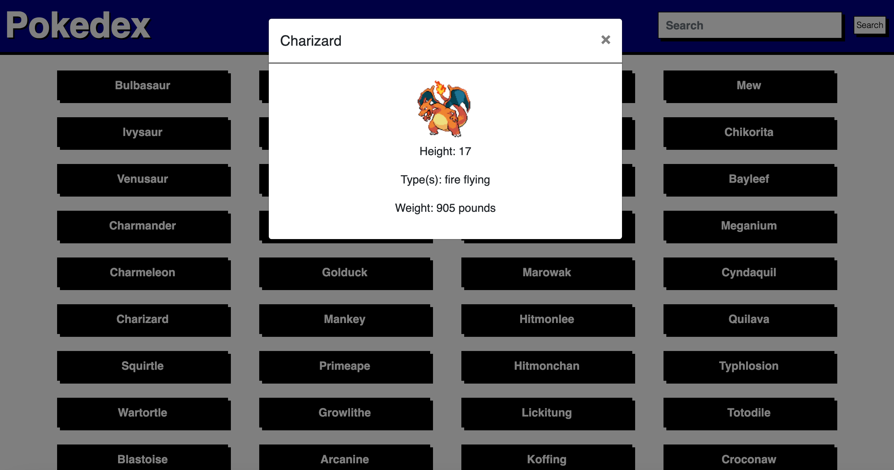
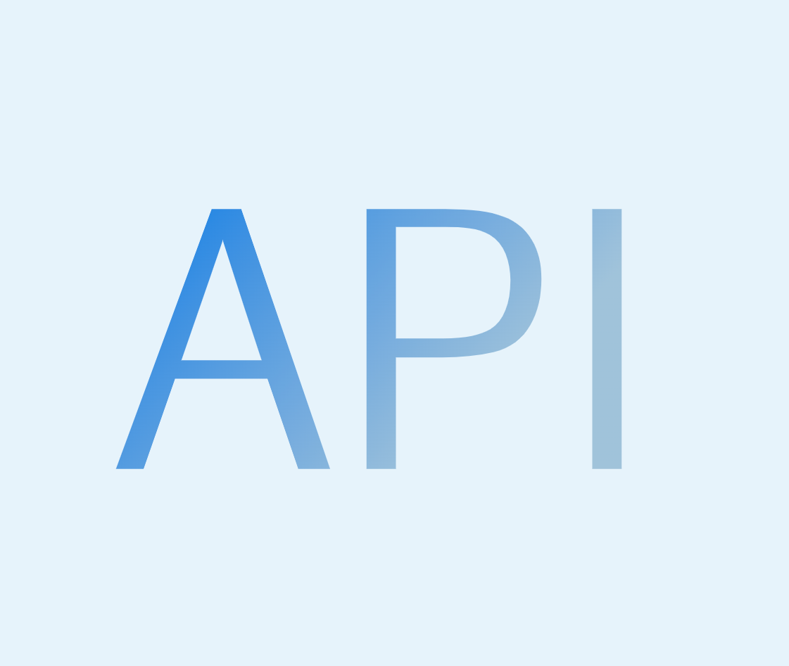
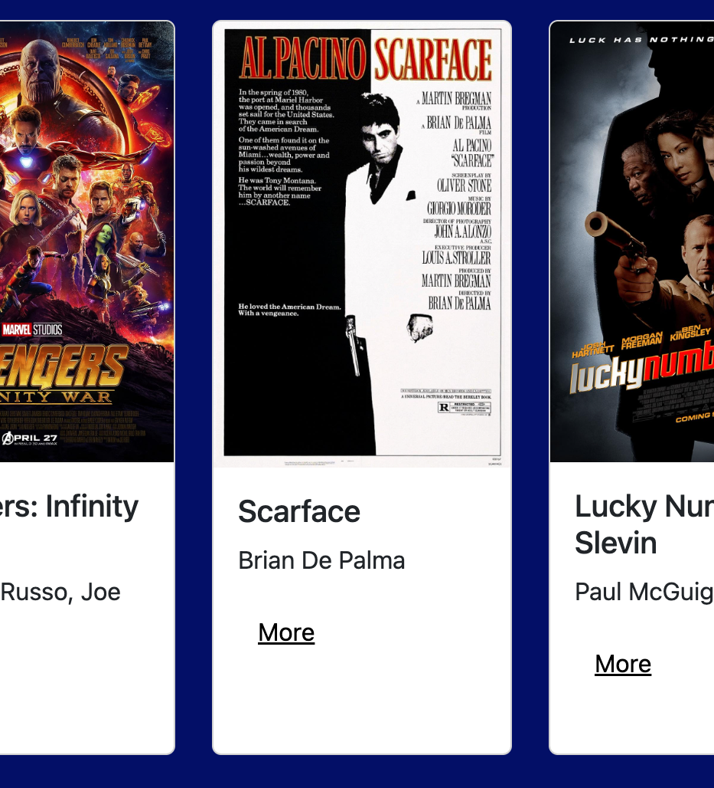
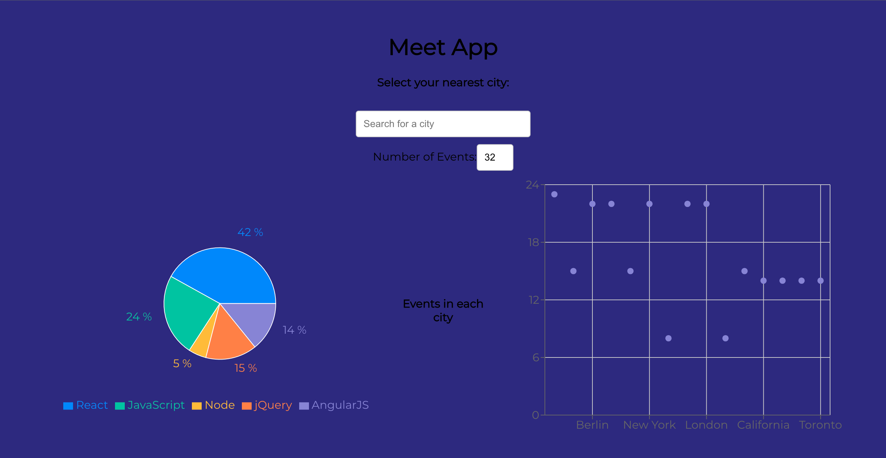
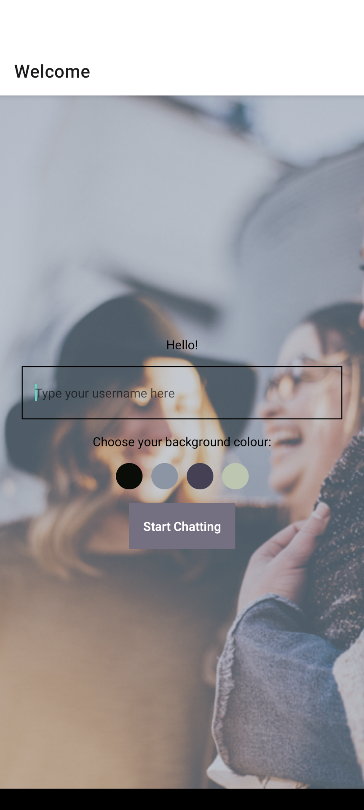
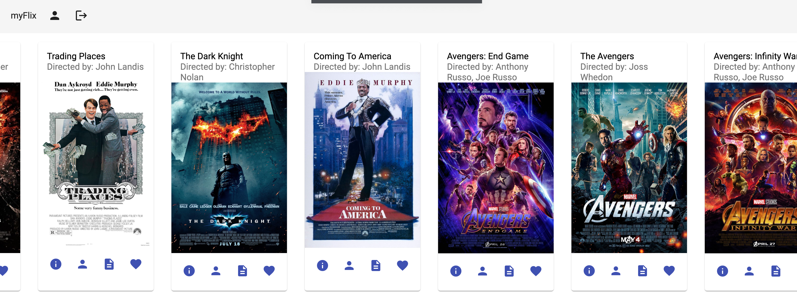

Work
Here's a quick look at the projects I've worked on throughout my hands-on Full Stack Developer course.
Pokedex
Within this project, I was responsible for the front and back end. It is written in HTML, CSS, and Javascript. It uses the PokeAPI to get the data for the pokemon. Users can search for a pokemon and see its stats or click on the pokemon button to see more information. The technologies that were used for this app are the following: JavaScript,jQuery,HTML, and CSS.
See Website PageSee project on GitHub
Movie API
This is a node.js project built with express which contains the whole API for the MyFlix Application. The Database with the movies was built with non-SQL MongoDB. The technologies that were used for this app are the following: Node.js,Express, and Mongoose (MongoDB)
See Website Page See project on GitHubMyFlix Client
This application is the front-end of a movie app, including general information about the movie itself, like the description and genre, plus the director of the movie, as well as the biography of the director. It also allows users to create a new user, including information about the user, plus allowing the user to change their data, as well as adding or removing movies from their list of favorites, and allowing them to delete their account. The technologies that were used for this app are the following: React, SCSS, and Parcel
See Website Page See the API on GitHub See the client on GitHubMeet app
This is an app built using React on the frontend, and AWS Lambda on the backend. It displays a list of events, which is fetching the events from Google Calendar API, that can be filtered by city or number of events. The technologies that were used for this app are the following: React,AWS Lambda,Google OAuth, Recharts, Jest & React Testing Library, and Puppeteer
See Website Page See project on GitHubChat app
I created this chat app using React Native. It has features for chatting, sharing/taking pictures, and sharing location. The technologies that were used for this app are the following: React Native, Expo, Firebase(Firestore, Storage), React Native Gifted Chat, and Node.js
See project on githubMyFlix Angular Client
This is an Angular App which uses the movie api as a backend. With this app you can register or sign in a user and see a list of movies. The user can also favorite movies. This project was generated with Angular CLI. The technologies that were used for this app are the following: Angular Typescript
See Website Page See project on github